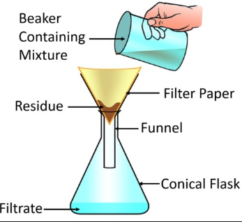
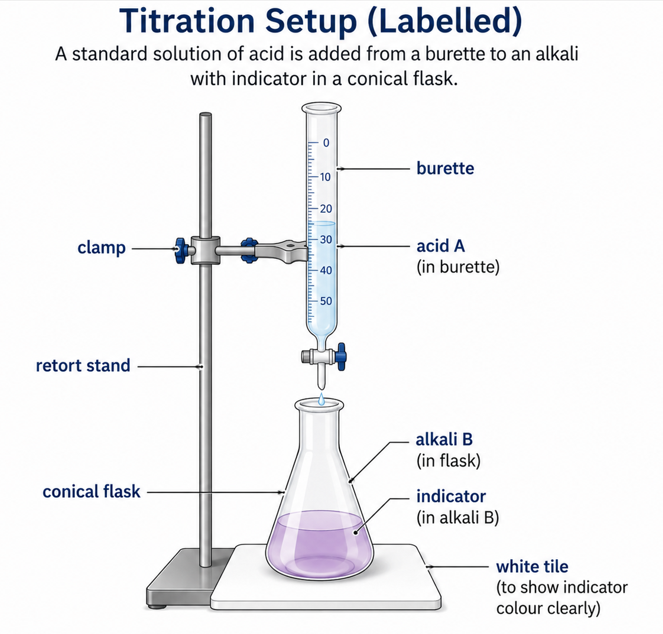

Enter Test 16 Question Paper
Question 1 - Quantitative Analysis
D contains \(6.30\,g\,dm^{-3}\) of \(H_2C_2O_4\cdot2H_2O\). E contains \(3.10\,g\,dm^{-3}\) of \(KMnO_4\).
- Calculate the concentration of D in \(mol\,dm^{-3}\). [\(H_2C_2O_4\cdot2H_2O=126\)]
- Calculate the theoretical titre of E required for \(25.0\,cm^3\) of D.
- State why no external indicator is needed.
- State two errors that would make the titre too high.
Question 2 - Qualitative Analysis
F is tested with water, iodine, NaOH, NH3, BaCl2, Pb(NO3)2, HCl, HNO3 and zinc dust.
- Prepare a full observation and inference table.
- Write equations for the formation of \(Cu(OH)_2\), \(BaSO_4\), and displacement of copper by zinc.
- Explain why the residue and filtrate must be tested separately.
Question 3 - Apparatus and Theory
- Complete a table of apparatus and uses: pipette, clay triangle, crucible, bomb calorimeter.
- Arrange \(PbCl_2\), \(PbSO_4\), \(Pb(NO_3)_2\) in increasing order of solubility.
- State the effect on litmus of \(KNO_3(aq)\), \(K_2CO_3(aq)\), and \(Al_2(SO_4)_3(aq)\).
- Draw a labelled filtration setup.
Best A1 Solution
Question 1
\[C_D=\frac{6.30}{126}=0.0500\,mol\,dm^{-3}\]
\[C_E=\frac{3.10}{158}=0.0196\,mol\,dm^{-3}\]
\[n(C_2O_4^{2-})=\frac{0.0500\times25.0}{1000}=1.25\times10^{-3}\,mol\]
\[n(MnO_4^-)=\frac{2}{5}\times1.25\times10^{-3}=5.00\times10^{-4}\,mol\]
\[V_E=\frac{5.00\times10^{-4}\times1000}{0.0196}=25.5\,cm^3\]
Teacher: \(KMnO_4\) is purple and acts as a self-indicator. The endpoint is permanent pale pink.
Question 2
| Test | Observation | Inference |
|---|---|---|
| F + water and filter | Blue filtrate and residue. | Copper(II) salt dissolves; starch remains partly as residue. |
| Residue + iodine | Blue-black colour. | Starch confirmed. |
| Filtrate + NaOH | Blue precipitate, insoluble in excess. | \(Cu^{2+}\). |
| Filtrate + NH3 excess | Deep blue solution. | \(Cu^{2+}\) confirmed. |
| Filtrate + BaCl2 | White precipitate. | \(SO_4^{2-}\). |
| Filtrate + Pb(NO3)2 | White precipitate. | \(SO_4^{2-}\) supported. |
| Filtrate + zinc dust | Blue fades; reddish-brown copper deposited. | Zinc displaces copper. |
\[Cu^{2+}+2OH^-\rightarrow Cu(OH)_2(s)\]
\[Ba^{2+}+SO_4^{2-}\rightarrow BaSO_4(s)\]
\[Zn(s)+Cu^{2+}(aq)\rightarrow Zn^{2+}(aq)+Cu(s)\]
Question 3
| Apparatus | Use |
|---|---|
| Pipette | Measures a fixed volume of liquid accurately. |
| Clay triangle | Supports a crucible during strong heating. |
| Crucible | Container for heating solids to high temperature. |
| Bomb calorimeter | Measures heat of combustion. |
Increasing solubility: \(PbSO_4 < PbCl_2 < Pb(NO_3)_2\).
| Solution | Effect on litmus |
|---|---|
| \(KNO_3(aq)\) | Neutral; no change. |
| \(K_2CO_3(aq)\) | Alkaline; turns red litmus blue. |
| \(Al_2(SO_4)_3(aq)\) | Acidic; turns blue litmus red. |

Filtration
Teacher: Label filter funnel, filter paper, residue and filtrate.

Titration
Teacher: The candidate must understand the apparatus even when the question is calculation-heavy.